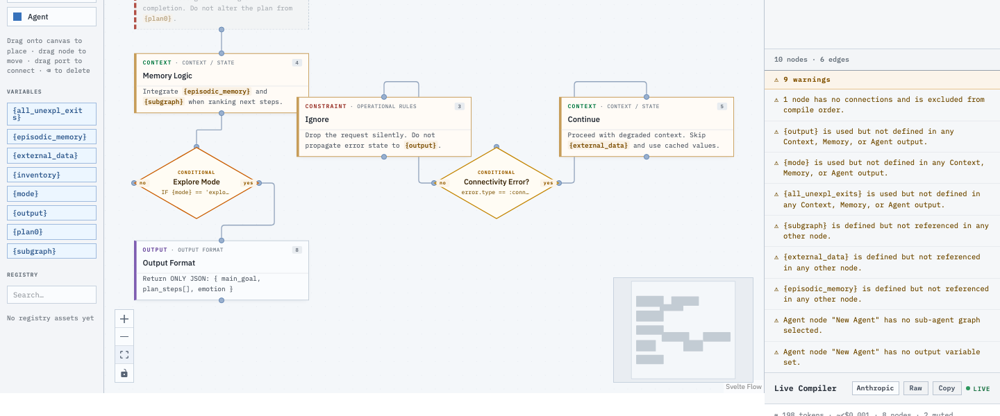
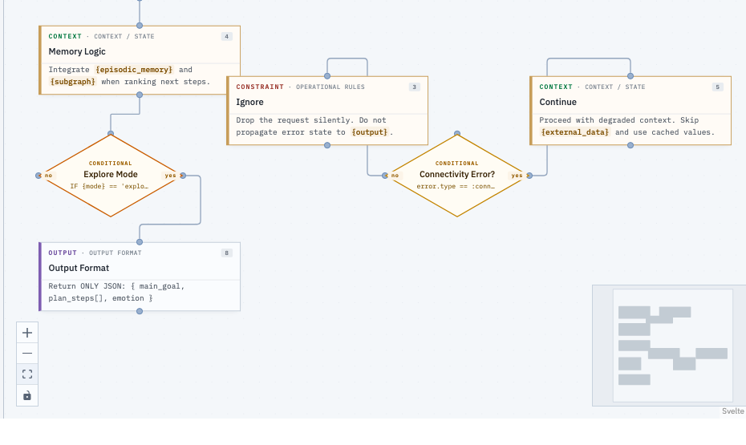

Most agents are long, fragile prompt strings — edit the text and hope nothing breaks. Newtonian Spark treats agent behavior as architecture: modular, versioned, validated, and deployable.

Each node is a discrete piece of logic — a persona, a constraint, a piece of context, a branch. Edges define how they compose. Because the design is structured, the platform can validate it, version it, and compile it to model-ready instructions on every change.
{variable} anywhere. The studio discovers every variable, maps producers and consumers, and flags what's undefined or unused.Typed blueprint nodes, conditional diamonds with yes/no routing, and inline variable highlighting — review an agent you didn't write the way you'd review code.
